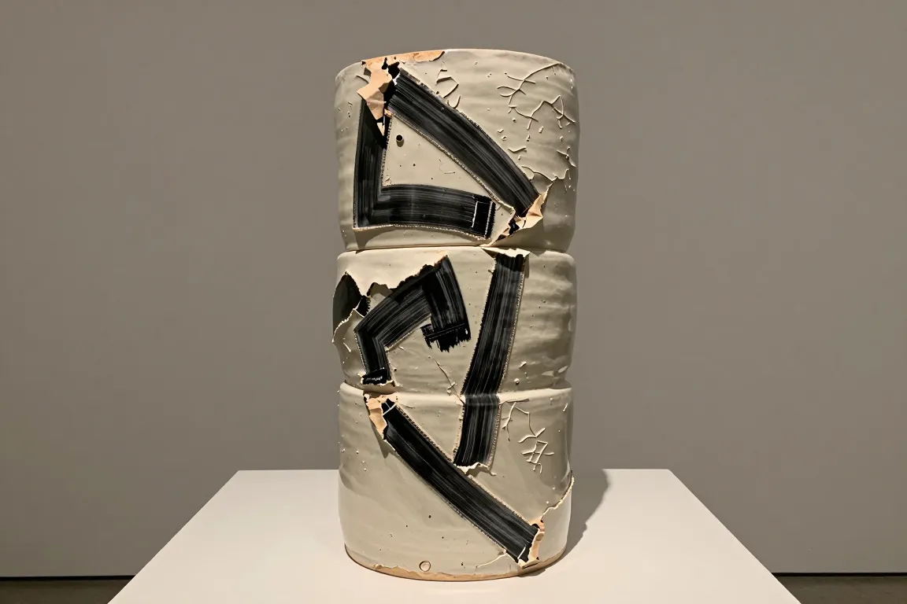

керамика · 1954–1975 · также: Керамика группы Отиса, Школа Волкоса, Глина как скульптура
Американская керамика после 1954 года, где гончар обращается с сосудом как со скульптурой. Питер Волкос выкручивал большие формы, резал, рвал и ставил их друг на друга и расписывал жестом живописи действия.

Главная идея
Горшок — место для жеста: выточенный цилиндр можно резать, рвать и громоздить, как краску на холсте, и назначение сосуда больше не задаёт форму.
Принципы дизайна
Вытачивайте большие цилиндры 40–100 см, из 3–5 частей, и соединяйте их, пока они мягкие.
Режьте, рвите, бейте лопаткой и прокалывайте стенку, чтобы действие оставалось видимым.
Ставьте части в высокую неровную форму с открытыми отверстиями, показывающими нутро.
Расписывайте глину густым ангобом и железом широкими жестами, как художник действия пишет холст.
Берите толстые сырые глазури: чёрное железо, золу и тэммоку, с потёками и пятнами голой глины.
Обжигайте в газовой печи в восстановлении при 1200–1300 °C; принимайте трещины и коробление.
Оставляйте отверстие сосуда, крышку или носик как знак горшка, даже когда горшок не способен держать жидкость.
Работайте быстро и группой и называйте студию местом работы, а не гончарной.